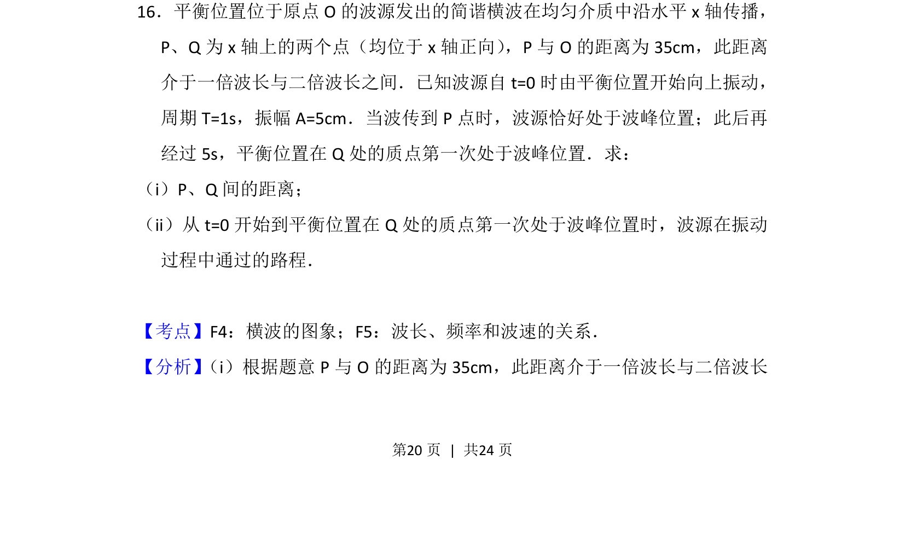
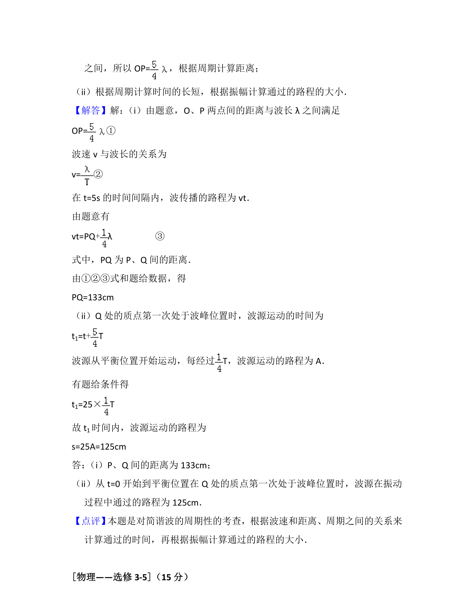

考点：横波的图象 波长 频率和波速的关系

考查简谐横波传播规律，利用波长、周期及质点振动状态求两点间距离和波源振动路程。

📄 原 PDF 第 20 页：
素材/真题/吉林/2008-2024·（吉林）物理高考真题/2015年高考物理试卷（新课标Ⅱ）（解析卷）.pdf
16．平衡位置位于原点O的波源发出的简谐横波在均匀介质中沿水平x轴传播， P、Q为x轴上的两个点（均位于x轴正向） ，P与O的距离为35cm，此距离 介于一倍波长与二倍波长之间．已知波源自t=0时由平衡位置开始向上振动， 周期T=1s，振幅A=5cm．当波传到P点时，波源恰好处于波峰位置；此后再 经过5s，平衡位置在Q处的质点第一次处于波峰位置．求： （i）P、Q间的距离； （ii）从t=0开始到平衡位置在Q处的质点第一次处于波峰位置时，波源在振动 过程中通过的路程．
【考点】F4：横波的图象；F5：波长、频率和波速的关系．菁优网版权所有 【分析】 （i）根据题意P与O的距离为35cm，此距离介于一倍波长与二倍波长